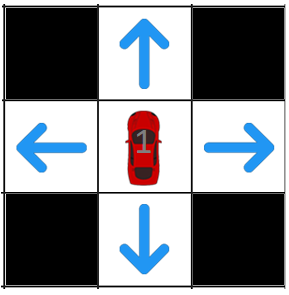
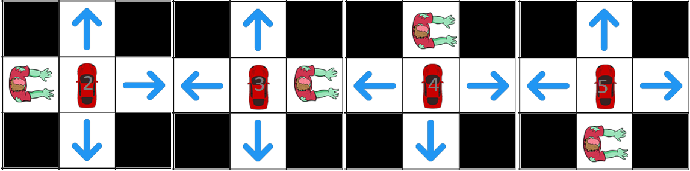
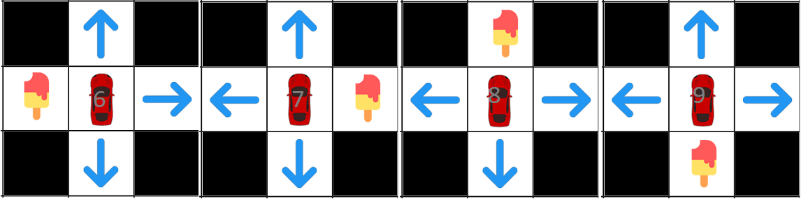

Say your a car and want to get ice cream, and also you want to avoid zombies. Which action would be best to take?

Another solution to cover infinite states, we will create a limited observation view for our agent, again we will just be adding states randomly or states that are important:
State that gets icecream
State that dies in zombies
State that are empty
Syntax: state action reward next-state
Results: (Note: Press compute policy button multiple times until it gets the optimal policy)
Per Action:
As we observed our agent can avoid zombies efficiently in an infinite amount of state, but the problem would be that our agent might never reach the icecream because it doesn't see as much. notice that the more it explores, the more skeptical the agent would be, next we will apply qlearning in a famous game flappy bird.
More sophisticated solution for a flappy bird game